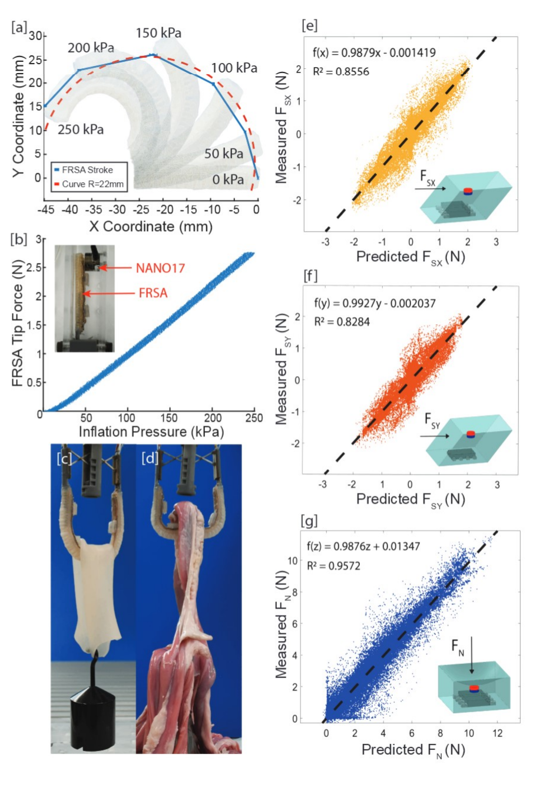

Overview
Rigid laparoscopic instruments can concentrate forces on fragile bowel tissue while providing limited information about tissue interaction forces. This prototype enters through an 18 mm trocar in a closed configuration and expands inside the abdominal cavity. A distal suction unit first isolates the target tissue, after which two compliant pneumatic actuators envelop the intestine to distribute the grasp over a larger contact area.
How It Works
Engage
A distal suction unit establishes an initial hold and helps isolate the target intestinal segment from surrounding tissue.
Deploy
A miniaturized scissor-lift mechanism adjusts the separation of the two fiber-reinforced soft actuators from the closed configuration to a maximum spacing of approximately 40 mm.
Grasp and Monitor
The actuators inflate around the intestine, while integrated soft magnetometric sensors estimate three-dimensional interaction forces.
Preliminary Results
500 g
Load supported by the grasper end effector
>2.5 N
Measured actuator tip force
0.16 N
Normal-force sensor mean absolute error
Initial testing characterized actuator bending and force generation, demonstrated grasping of a weighted silicone specimen and explanted porcine intestine, and evaluated neural-network-based force estimation.

Extended Journal Version
This HSMR 2023 paper presents the initial grasper architecture and preliminary actuator, sensing, and grasping experiments. The later Device journal article expands the system into the MAIR platform and reports a detachable end effector, passive abdominal-wall anchoring, additional sensing validation, and broader in vitro and ex vivo experiments.
Citation
L. Kinnicutt, J. Lee, J. Oden, L. T. Gaeta, S. K. Carroll, A. Rathi, Z. H. Lim, M. Lee, C. Orakwue, K. J. McDonald, D. Hess, and T. Ranzani. “A Soft Laparoscopic Grasper for Retraction of the Small Intestine.” The 15th Hamlyn Symposium on Medical Robotics, 2023, pp. 97-98.
@inproceedings{kinnicutt2023soft,
author = {Kinnicutt, L. and Lee, J. and Oden, J. and Gaeta, L. T. and Carroll, S. K. and Rathi, A. and Lim, Z. H. and Lee, M. and Orakwue, C. and McDonald, K. J. and Hess, D. and Ranzani, T.},
title = {A Soft Laparoscopic Grasper for Retraction of the Small Intestine},
booktitle = {The 15th Hamlyn Symposium on Medical Robotics},
pages = {97--98},
year = {2023},
doi = {10.31256/HSMR2023.51}
}